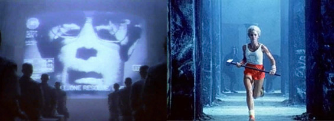

With the girl in bright cloth representing Apple and the Big Brother representing IBM, Apple’s competitor, Apple is trying to show that their company is unique, original, and better and IBM is plain with no individuality. By this way, Apple wants its consumers to believe that anyone who buys their Macintosh will be considered unique and different and is not a follower to big corporations.
